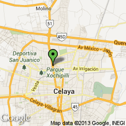

Bienvenido al portal del ITC
Somos una Institución de Educación Superior, consolidada en la Región Laja- Bajío del Estado de Guanajuato, con más de 55 años formando talentos comprometidos con la sociedad, con oferta educativa a nivel profesional, maestrías y doctorados, perteneciente al SNEST. Nuestros programas se reconocen por su buena calidad, por organismos evaluadores. En nuestros espacios educativos nuestros alumnos desarrollan las habilidades que les preparan para enfrentar los retos que el entorno demanda. Nuestros egresados tienen una amplia aceptación en los diferentes sectores, tanto en la región como al interior del país.


Admisión Información para los aspirantes que desean formarse profesionalmente en nuestra Institución.
 Calendario escolar:
Calendario escolar:
Consulta eventos y fechas oficiales.

Profesores Obtén información sobre formación y actualización docente y profesional así como enlaces a (SII)(SG)

Alumnos Obtén información sobre becas, servicio social, actividades extra escolares.

ADQUIERE EL INSTITUTO TECNOLÓGICO DE CELAYA LICENCIA DE SOFTWARE DE MICROSOFT
Campus I

Campus II
Siguenos en: